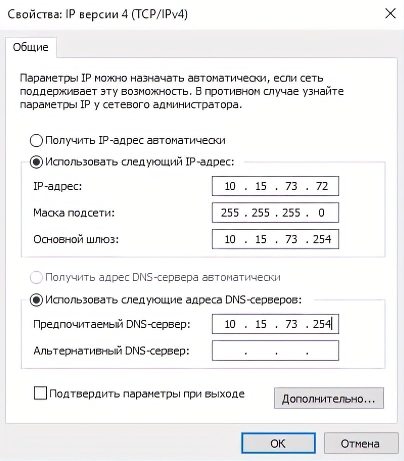
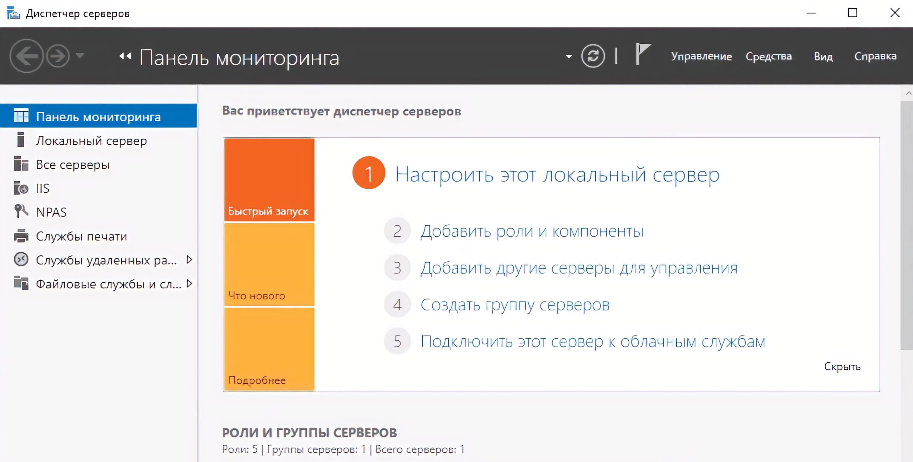
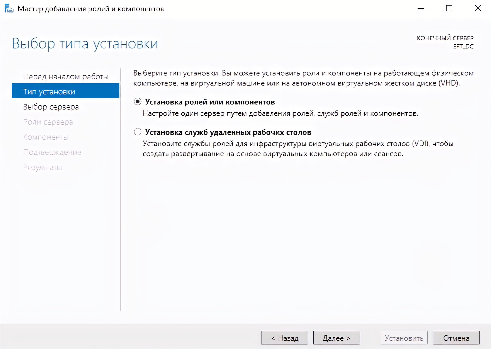
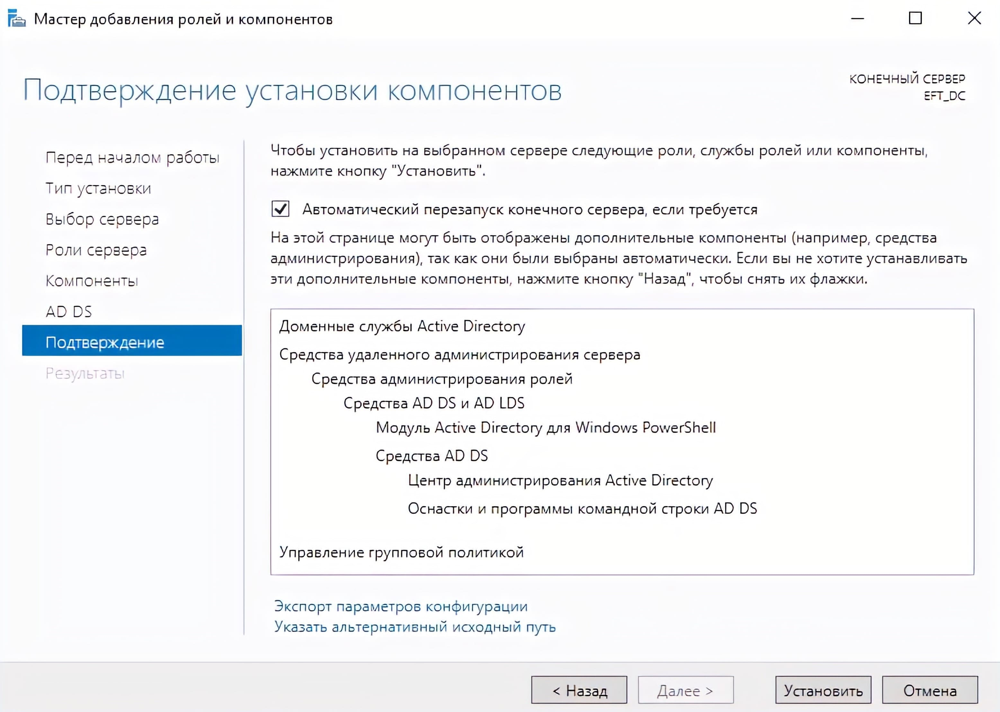
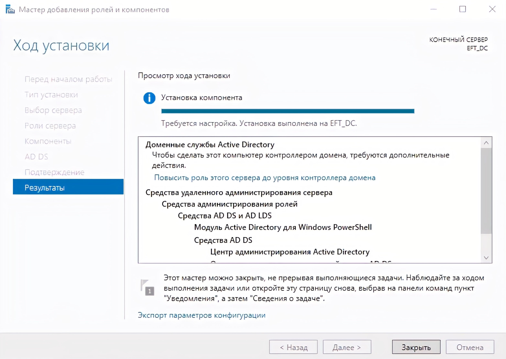

Техническое обеспечение
Изучите материал о техническом обеспечении. Чтобы перейти к учебному материалу, кликните на каждую из иконок.
Изучите материал о техническом обеспечении. Чтобы перейти к учебному материалу, кликните на каждую из иконок.
УСТАНОВКА И НАСТРОЙКА КОНТРОЛЛЕРА ДОМЕНА
Необходимо зайти на сервер под учетной записью локального администратора. В связи с тем, что на сервер помимо роли Active Directory Domain Services будет установлена служба DNS, нам нужно изменить настройки сетевого интерфейса на ВМ, указав в поле первичного DNS сервера ip-адрес нашего шлюза по умолчанию.
Далее нам необходимо открыть консоль Диспетчера серверов и нажать на пункт Добавить роли и компоненты.
В следующем окне нам необходимо выбрать пункт Установка ролей или компонентов и нажать на Далее.
В данном окне выбираем наш сервер, на котором будет поднята роль Контроллера Домена и нажимаем Далее.

На данном этапе кликаем по чекбоксу с наименованием Доменные службы Active Directory.

В появившемся окне нажимаем на кнопку Добавить компоненты и пропускаем окна выбора компонентов и описания AD DS по нажатию кнопки Далее.

Прожимаем чекбокс в котором написано Автоматический перезапуск сервера, если потребуется и нажимаем на кнопку установить.
На экране будет отображен ход установки выбранных нами ролей. По завершению установки нажимаем на ссылку Повысить роль этого сервера до контроллера домена.
В окне Мастер настройки доменных служб Active Directory Выбираем опцию Добавить новый лес и указываем имя корневого домена.

В пункте Параметры контроллера домена необходимо указать функциональный уровень домена и леса AD. Выбираем схему соответствующую редакции нашего сервера. Так как на данном сервере будет поднята роль DNS сервера нужно прожать следующие чекбоксы и указать пароль администратора для входа в DSRN режим.

Наш сервер будет первым DNS сервером в лесу, поэтому мы не настраиваем делегацию DNS. Нажимаем Далее.

В следующем окне оставляем NETBIOS имя домена без изменений и нажимаем Далее.
Указываем расположение баз данных AD DS, файлов журналов и папки SYSVOL. После выбора нажимаем Далее.

На экране просмотра параметров будет отображен список всех выбранных нами настроек. Нажимаем Далее, проходим предварительную проверку и нажимаем Установить.

После завершения процесса установки сервер автоматически перезагрузится. Теперь мы можем войти на сервер под учетной записью домена.